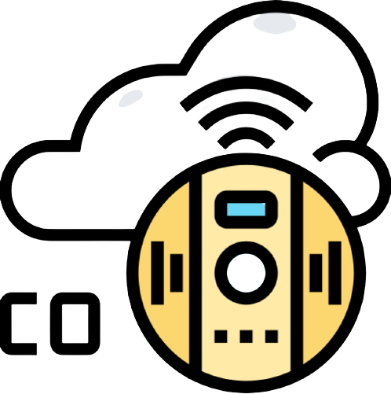

Si vous souhaitez veiller à ce que vos employés se sentent bien et restent en bonne santé sur votre chantier, optez pour le casque connecté de Better Labor, Better Set 1. Notre produit est intégré dans le casque de chantier pour faciliter l'utilisateur et ne pas le gêner. C'est pour que cela que notre casque innovant et connecté offrira un meilleur confort de travail à vos employés, ou bien à vous-même. Better Set 1 est composé de 4 capteurs différents : 1) - Un capteur pour les fréquences cardiaques qui permet de vérifier qu’il n’y ait pas de fréquence anormalement élevée, et que l’effort demandé aux travailleurs n’est pas constamment excessif; 2) - Un pour détecter la sueur qui signale au travailleur de se réhydrater en fonction de la quantité de sueur détectée; 3) - Un autre pour détecter cette fois-ci le monoxyde de carbone ou d'autres gaz nocifs afin de notifier le travailleur et garantir sa santé; 4) - Le dernier pour la puissance du signal sonore pour éviter les surdités professionnelles.

